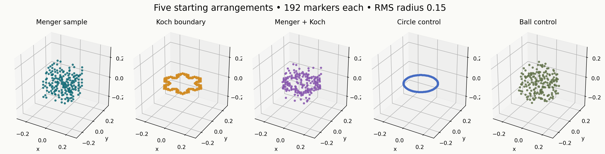
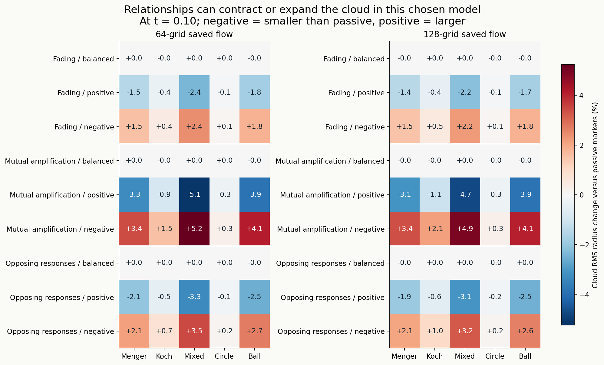
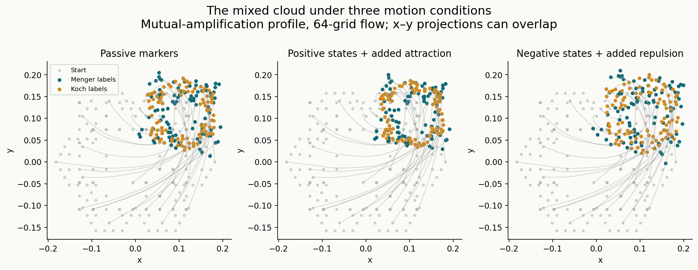
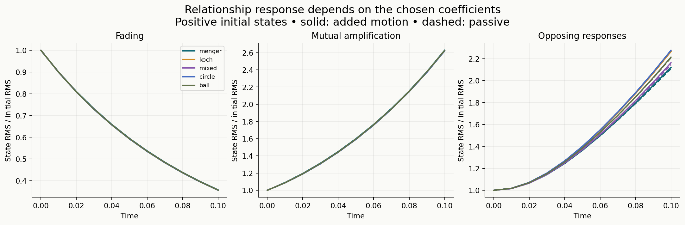
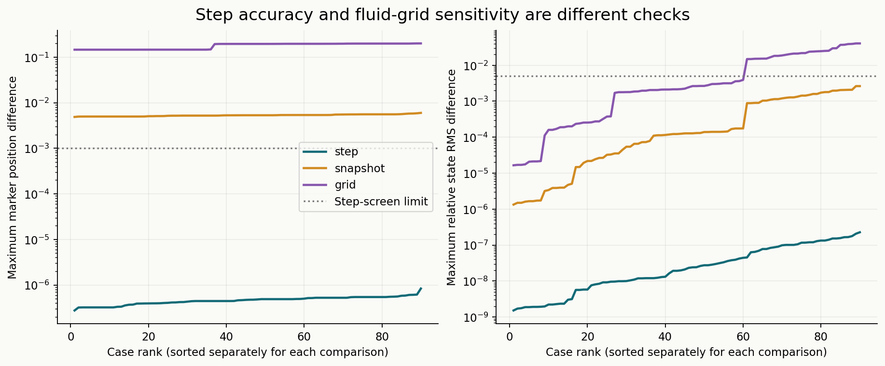

Local exploratory study · completed through t = 0.10
Menger cheese + Koch snowflake + changing relationships
The combination is implementable. In this selected interaction model, changing relationship states changes how a marker cloud contracts, expands and rearranges. These results do not establish an improvement to Navier–Stokes or a model of water molecules.
360case trajectories across four configurations
192markers in each cloud
90/90cases pass the step-size screen
0new fluid simulations
What we combined
Five marker arrangements use the same count, centroid and starting RMS radius. Each is tested with three Romeo–Juliet response profiles, three starting state conditions, and motion coupling either off or on. This gives 90 cases and 45 matched comparisons. All cases are repeated with a smaller tracking step, 128-grid saved flow, and coarser velocity snapshots.

Finite marker arrangements. The Menger cloud samples 192 of 400 depth-2 retained cells; Koch uses all 192 depth-3 vertices. Empty regions are not physical walls. Geometry, embedding and graph structure differ, so this does not isolate fractal dimension.
What happened
In the mixed Menger–Koch cloud with mutually amplifying responses, positive starting states changed final cloud radius by -5.11% relative to passive markers. Reversing those states changed it by +5.24%. Balanced starting states gave +0.02%. These signs describe the measured cloud-size effect, which also includes the spatially varying background flow.

All 45 matched comparisons at both fluid grids. Values compare each active cloud to its own passive counterpart. The three initial states are distinct test conditions, not independent replicates.

Illustrative paths from the saved 64-grid flow. Only every sixth path is drawn; every final marker is shown. Projection crossings do not imply collisions in three dimensions.

Fading, amplification and opposed responses are prescribed by coefficients. An opposing two-person pair has closed linear orbits, but that does not make an entire heterogeneous network a center.
How the equations connect
Each marker has position xᵢ and a signed relationship state zᵢ. The initial neighbor graph is symmetric; its weights change with separation. In a two-marker graph, the state equation reduces exactly to the Romeo–Juliet linear system.
zᵢ′ = aᵢ zᵢ + bᵢ Σⱼ Pᵢⱼ(x) zⱼ
xᵢ′ = u_saved(xᵢ,t) + (μ / d̄₀) Σⱼ wᵢⱼ tanh((zᵢ+zⱼ)/2) rᵢⱼ
rᵢⱼ = shortest periodic displacement from i toward j
wᵢⱼ = exp[−min(|rᵢⱼ|² / (2·0.1²), 50)] on initial graph edges
Pᵢⱼ = wᵢⱼ / Σⱼ wᵢⱼ; d̄₀ = initial mean weighted degree
μ = 0 (passive), or 20 (added attraction/repulsion)
Positive pair states add attraction; negative pair states add repulsion. The sum of the added pair drifts is zero to rounding accuracy. This is an overdamped drift law: it has no separate particle inertia, collision exclusion or feedback force on the fluid. Zero total drift is not a proof of momentum conservation or incompressibility.
For the full network, half the opposed-response coefficients are +20 and half −20, assigned by a fixed seed. The network geometry matters. The coefficients, coupling strength, connection length and initial states are illustrative choices; none were fitted to water.
Does this help Navier–Stokes?
Useful as a diagnostic and a separate interaction experiment; no demonstrated improvement to NS.Passive markers can measure how the existing velocity field moves structured neighborhoods. When relationships change marker motion, the added law creates a different particle model. Improving a physical fluid model would require a justified coupling law, compatible conservation and stress relations, convergence, and validation against independent fluid observations. This pilot has no such validation.
The effect also occurs in smooth control clouds. A response to the added law therefore cannot by itself establish a special benefit from fractal geometry. The mixed case is a combination of two point arrangements; it is not a new limiting fractal construction.
Checks, failures and sensitivity
All 360 trajectories completed with finite saved values. All 90 cases pass the declared tracking-step screen: largest position difference 8.34e-07, largest relative state RMS difference 2.27e-07. The screen limits are 0.001 and 0.005 respectively. Pair integrations agree with matrix-exponential solutions; label permutations, zero-state controls, passive position identity and state-sign symmetry pass. Saved source, input-field and result hashes pass.

Maximum differences over all common saved times. The grid comparison changes the sampled initial fluid as well as spatial resolution; it is sensitivity evidence, not a clean order-of-convergence estimate.
The radius-effect sign agrees across grids in 37 of 45 comparisons. All eight reversals occur in balanced-state cases with effects below 0.024% in magnitude. The larger positive/negative-state effects keep their signs. Individual paths nevertheless differ by as much as 0.20 between grids, and by 0.006 when velocity snapshots are coarsened. The mixed cloud's amplification results at 128 grid are −4.72% and +4.94%, compared with −5.11% and +5.24% at 64 grid.
Underlying fluid limitation: the original raw strain is not smooth across periodic joins, its initial maxima lie outside the central tube, and its strongest gradients are unresolved. Those fields were preserved. Smaller marker-integration errors cannot repair that input limitation. No physical accuracy or asymptotic stability claim follows from passing the tracking screen.
Cloud radius is computed from unwrapped marker coordinates. Separation uses the shortest periodic displacement. Neighbor retention uses the initial directed eight-nearest-neighbor sets, including distance ties; the evolution graph uses their symmetric union. Minimum sampled separation does not prove collision-free motion between saved times. Finite marker clouds do not establish a limiting fractal dimension, and this short window does not estimate asymptotic Lyapunov exponents.
All matched endpoint results
Starting graph checks
| Geometry | Markers | Connected components | Degree range | Minimum separation |
|---|
| menger | 192 | 1 | [8, 21] | 0.030875 |
| koch | 192 | 1 | [8, 12] | 0.011815 |
| mixed | 192 | 1 | [8, 17] | 0.013747 |
| circle | 192 | 1 | [8, 8] | 0.0049085 |
| ball | 192 | 1 | [8, 15] | 0.0049219 |
Reproducible files
Protocol · Simulation script · Analysis script · Report script · Run records and hashes · All measurements and checks · Independent artifact verification
Base trajectories · Smaller-step trajectories · 128-grid trajectories · Coarser-snapshot trajectories · Initial geometry and graph
Run analysis and report scripts with work/study-env/Scripts/python.exe. The simulation script requires the existing matched-stretch source and saved field directory, with hashes listed in results.json. Its existing-state guard prevents accidental duplicate runs. Python dependencies: NumPy, SciPy and Matplotlib.